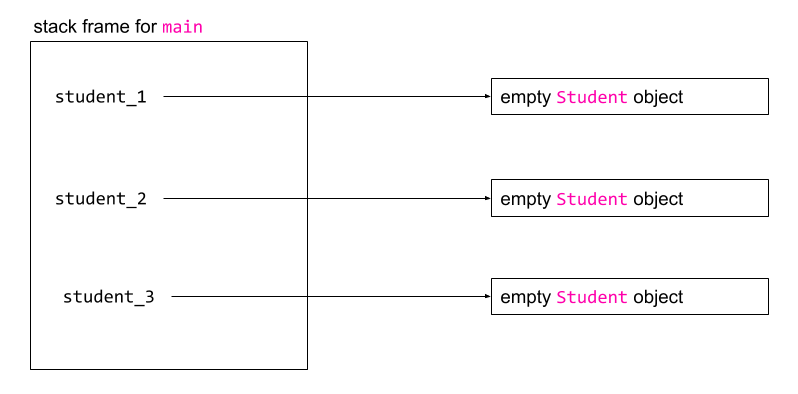
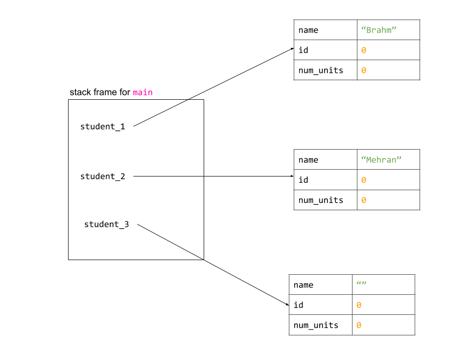
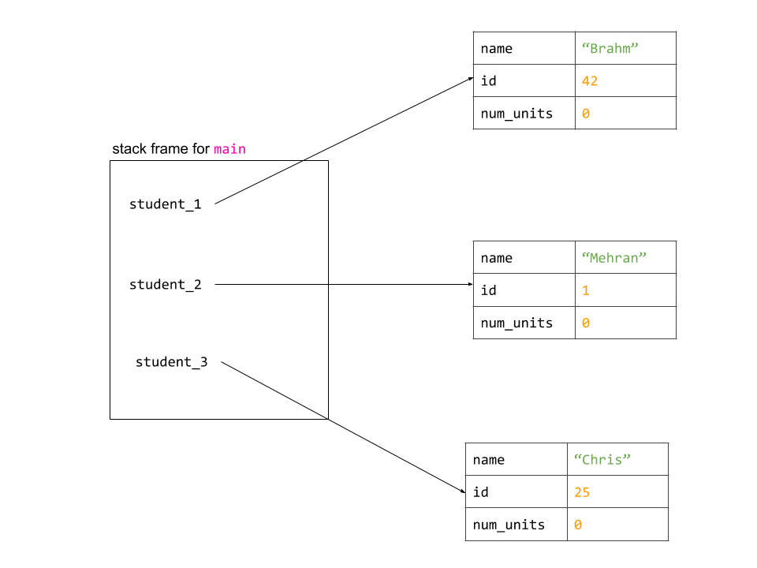

Objects & Classes
May 25th, 2020
Written by Brahm Capoor
This handout is intended to provide an overview of object-oriented
programming in Python. For another approach to the material, check out
the lecture slides and code.
Programming Paradigms
Thus far in CS 106A, you have been employing a form of programming
known as imperative programming, in which the programmer
directly invokes commands which modify the state of the program.
Examples of such commands are calling functions you've written, as
well as the use of loops, if statements and variables.
Another incredibly common programming paradigm is known as
Object Oriented Programming (OOP), in which a programmer
defines objects which are characterized by their properties and
behaviours, and programs consist mostly of interactions between these
objects.
Python allows for programmer to adopt many paradigms; however,
imperative programming and Object-Oriented Programming are two of the
most commonly used.
Overview of Object Oriented Programming
Object Oriented Programming is built upon the idea of classes,
which act like blueprints for objects that need to be represented in a
program. Each class defines a new type to be used in our
program, just like we can use the int,
SimpleImage and dict types. Whenever we
declare a variable of this new type, we are making an object that is
an instance of the class (formally, making this variable is
known as instantiating the class). Just as with other variable
types, a programmer can make as many objects, or instances of a class,
as they need to.
Properties in a class are represented by what we refer to as
instance variables, and behaviours by methods.
In the abstract, this seems a far reach from how you're used to
programming, but it turns out that you've been taking advantage of
classes throughout your work in CS 106A.
-
SimpleImage is a class that represents a digital image,
with properties like its pixels and dimensions and behaviours like
the ability to set and get pixels. Equally, pixels come from the
Pixel class, which has as attributes a red, green and
blue component.
-
The canvases you have worked with in graphical projects are
instantiations of the
Canvas class which represent a
drawable canvas, with properties such as its dimensions and drawn
objects, and behaviours such as moving the objects on it.
-
Lists are objects of the
list class that represent
ordered lists, with properties such as length, and behaviours such
as appending to the list, extending the list and popping from the
list.
Indeed, other than integers, floating-point numbers and booleans, most
of the variable types you have worked with in CS 106A have been
objects of a particular class. Thinking about what properties and
behaviours they have is a very useful exercise.
Advantages of Object-Oriented Programming
Representing information through classes has three related benefits:
-
Representing conceptual entities: Classes allow a programmer
the ability to represent complex entities for the purposes of
abstraction. For example, objects of the
SimpleImage class can encapsulate tens of thousands of
pixels without a programmer having to explicitly maintain that many
Pixel variables.
-
Facilitating shared information: Classes allow a programmer
to share information between a group of related functions. For
example, the
pop, get, keys,
values and items methods in a dictionary
all need to know what the elements of the dictionary are, but this
bookkeeping is taken care of us by the dict class.
Without the dict class, we’d have to write each of
those methods as functions and pass in a dictionary object to those
functions, leading to a lot of repeated code across our different
programs.
-
The ability to create several instances of a class: Since
we're making a new variable type, we can make as many objects of
that type as we like. For example, it's easy for us to make many
list objects to use in our BabyNames program.
Defining a class
Suppose we are writing a program much like Axess to manage information
about students enrolled at a university. While it would be useful to
reason about students as separate conceptual entities, Python does not
define a Student type for us. Therefore, we define the
class in a file called student.py and then start making
variables of type Student in another file like
axess.py, like so:
student.py
class Student:
pass
axess.py
from student import Student
def main():
student_1 = Student()
student_2 = Student()
student_3 = Student()
if __name__ == "__main__":
main()
This code is short, but dense. There are several important things to
note:
-
The
Student class is defined in
student.py. As a stylistic convention classes are named
in UpperCamelCase, and the files they are defined in
have the same name in lowercase.
-
In
student.py, we define a new type with the
class Student statement, which indicates to Python that
we are defining a new type. For now, we leave the implementation of
the class blank, leaving in the pass keyword as a
parameter
-
The purpose of
student.py is simply to define the
Student class. Thus, it doesn't need a
main function.
-
In
axess.py, we make our new Student class
available by including the line
from student import Student, which imports the
Student class from student.py. Notice that
the line of code does not include the .py extension.
-
Once the
Student class has been imported in
axess.py, we can make variables of type
Student as we do with student_1,
student_2 and student_3. This is exactly
akin to making multiple SimpleImage variables:
student_1, student_2 and
student_3 are entirely separate and unaware of each
other's existence. In our computer's memory, each variable is a
reference to a new Student object.

Giving our class properties
Whilst being able to define and instantiate our own classes is a step
in the right direction, it only really becomes a powerful tool when we
can imbue our classes with properties and ways of interacting with
those properties. For our purposes, let us assume that every
Student has a name, an ID number and a number of
completed units. In actuality, such an object would likely contain
many other properties as well, but this subset is sufficient for our
purposes.
Properties are represented by instance variables in a class.
Instance variables are defined like so in a class:
student.py
class Student:
def __init__(self):
self.name = ""
self.id = 0
self.num_units = 0
axess.py
from student import Student
def main():
student_1 = Student()
student_2 = Student()
student_3 = Student()
student_1.name = "Brahm"
student_2.name = "Mehran"
print("Student 1's name is " + student_1.name)
if __name__ == "__main__":
main()
Yet again, this code is concise but dense. The key features are
outlined below:
-
A new method (which is the term for a function defined inside
a class)
__init__ is defined inside the
Student class. This method is known as the
constructor for the Student class, and its job
is to set up the properties of a particular Student object, encoding
those properties as instance variables. The constructor
accepts a parameter called self, which allows us to
refer to the specific instance of the object being created (indeed,
every method in a class will have a self parameter).
-
Inside the class constructor, we initialize each of the instance
variables for the object being constructed. Instance variables are
named as such because they are variables specific to an
instance of a class: just as the pixels or dimensions of
two SimpleImages have no relationship, the instance
variables of separate Student objects will be
unrelated. An instance variable is defined just like any variable
in Python, except the name of the variable is prefaced by
self. to inidcate that we are referring the the
instance variable of the object being constructed.
In this particular case, we define three instance variables for
the Student class: name,
id and num_units. The first is
initialized to a blank string and the next two are initialized to
0.
-
In
axess.py, when we make a student variable by calling
Student(), we are implicitly calling the constructor
for the Student class. What this means is that each of
student_1, student_2 and
student_3 will have their own sets of instance
variables, which can be modified separately. As a result, we can set
instance variables just as you might have set color components in a
pixel, and as we do in the line that says
student_1.name = "Brahm". This line has the effect of
modifying the name instance variable for the
student_1 object. Thus, running
axess.py has this output:
$ python3 axess.py
Student 1's name is Brahm
Now that each of our Student objects has instance
variables, our computer's memory looks like this before the
main
function ends:

Parameters in the constructor
In the previous example, the constructor for the
Student object initialized each of the instance variables
without outside input. However, a programmer might wish to specify the
name and ID number of the student at the time that the
Student object is created. In order to do this, we can
modify the constructor for the Student class like so:
student.py
class Student:
def __init__(self, name, id):
self.name = name
self.id = id
self.num_units = 0
axess.py
from student import Student
def main():
student_1 = Student("Brahm", 42)
student_2 = Student("Mehran", 1)
student_3 = Student("Chris", 25)
print("Student 1's name is " + student_1.name)
if __name__ == "__main__":
main()
Note that the __init__ method in the
Student class now accepts a name and
id parameter in addition to self. In the
body of the constructor, the name and id
instance variables are set to be equal to the values of the
parameters passed into the constructor.
When constructing the object in axess.py, we need to
supply values for these parameters (except self, which
Python takes care of). student_1 is created with a name
of "Brahm" and an id of 42,
student_2 with a name of "Mehran" and an id
of 1, and student_3 with a name of
"Chris" and an id of 25. As a result, we no
longer need to manually set the instance variables in
axess.py but rather allow the constructor to take care of
that for us.
Note finally that values for all the instance variables in the class
do not need to be provided as parameters to the constructor. For
example, the designer of the class can assert that every student
begins their Stanford career with 0 units, and so the
num_units instance variable can be set to
0 in the constructor without need for a parameter.
Running axess.py in this case, because the constructor
sets up the instance variables, produces the same output:
$ python3 axess.py
Student 1's name is Brahm
The memory of our computer looks like this before the program ends:

Adding Behaviours to a class
With the introduction of instance variables to our class, we now have
a new variable type that successfully encapsulates other, more atomic
variable types into a larger conceptual entity that we can reason
about. However, while our Student objects now have
properties, they become even more useful if we give them
behaviours, which we can do by introducing new methods to our
class.
For instance, a student at Stanford might have taken some number of
classes in high school that qualify them of units at Stanford, up to a
limit of 45 units. As we consider how to implement a method for this
ability, it is incredibly helpful to assess how such behaviour would
affect the properties, or instance variables, of the class. In
this case, it is fairly clear that the instance variable in question
is num_units, which is set to the smaller of 45 or the
number of units the student took in high school. This logic can be
implemented as follows:
student.py
class Student:
def __init__(self, name, id):
self.name = name
self.id = id
self.num_units = 0
def set_initial_units(self, num_units):
if num_units > 45:
self.num_units = 45
else:
self.num_units = num_units
axess.py
from student import Student
def main():
student_1 = Student("Brahm", 42)
student_2 = Student("Mehran", 1)
student_1.set_initial_units(21)
student_2.set_initial_units(60)
print("Student 1 units: " + str(student_1.num_units))
print("Student 2 units: " + str(student_2.num_units))
if __name__ == "__main__":
main()
There are several points of interest in this code:
-
We defined a new method in the Student class called
set_initial_units which accepts as parameters
self and an integer num_units and whose
responsibility is to modify the num_units instance
variable of the Student class.
Defining a method for this-rather than just directly setting the
num_units instance variable in
axess.py-is advantages because it allows us to
perform validation of the new number of units to ensure it is
within a specified range. Additionally, if there were other
instance variables which depended on the number of units the
student had, they could be updated in tandem with the
num_units instance variable.
-
Now, in
axess.py, we can call
set_initial_units for both our
student_1 and student_2 objects with
different parameters (note that we don't need to pass in a parameter
for self), and each object's instance variables will be
updated accordingly. Running axess.py produces this
output:
$ python3 axess.py
Student 1 units: 21
Student 2 units: 60
We might also wish for a student object to be able to determine
whether the student can graduate, where graduation is allowed as long
as the student has at least 180 units. We can define a function like
so:
student.py
UNITS_TO_GRADUATE = 180
class Student:
def __init__(self, name, id):
self.name = name
self.id = id
self.num_units = 0
# other methods defined here
def can_graduate(self):
return self.num_units >= 180
axess.py
from student import Student
def main():
student_1 = Student("Brahm", 42)
student_1.set_initial_units(21)
if student_1.can_graduate():
print("Student can graduate!")
else:
print("Not yet!")
if __name__ == "__main__":
main()
The
can_graduate method takes in no parameters other than
self, and returns whether or not the
num_units instance variable is greater than a constant
NUM_UNITS_TO_GRADUATE, defined in
student.py.
Running axess.py produces this output:
$ python3 axess.py
Not yet!